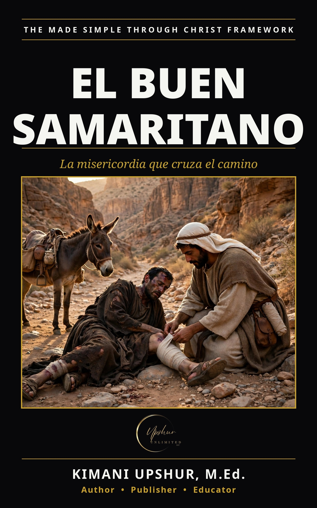

El Buen Samaritano
La misericordia que cruza el camino
por Kimani Upshur, M.Ed.
¿Prefieres la edición en inglés? The Good Samaritan — read in English
**Un sacerdote pasó de largo.** Un levita pasó de largo. Y un samaritano — el hombre del que nadie esperaba nada — se detuvo, se acercó, vendó las heridas y pagó la cuenta entera.
«El Buen Samaritano» recorre la parábola de Lucas 10 paso a paso: la pregunta del doctor de la ley, el camino que baja de Jerusalén, la compasión que cruza la calle, el aceite y el vino — la verdad que limpia y la gracia que consuela —, la misericordia del segundo día y la cuenta abierta. Doce capítulos breves con un paso claro para cada semana, y la pregunta que la parábola deja en pie: ¿serás tú el prójimo?
Parte de The Made Simple Through Christ Framework. Las citas bíblicas corresponden a la Reina-Valera 1909 (RVR1909), de dominio público.
En doce capítulos claros y directos descubrirás:
- La pregunta que lo empezó todo
- El camino que baja de Jerusalén
- El sacerdote que pasó de largo
- El levita que pasó de largo
- Pero un samaritano
- Se acercó a él
- Aceite y vino
- Dos denarios y un mesón
- Ve y haz tú lo mismo
- Amor en Hechos, no en palabras
- El prójimo que no elegirías
- Cuando el de la zanja eres tú
- Editorial
- Upshur Unlimited LLC
- Autor
- Kimani Upshur, M.Ed.
- Formato
- Libro electrónico
- Idioma
- Español
- Precio
- $4.99
- Capítulos
- 12
- Escritura
- Biblia Reina-Valera 1909 (RVR1909)
Más en español
El departamento de libros en español de Upshur Unlimited LLC seguirá creciendo con nuevas ediciones verificadas.